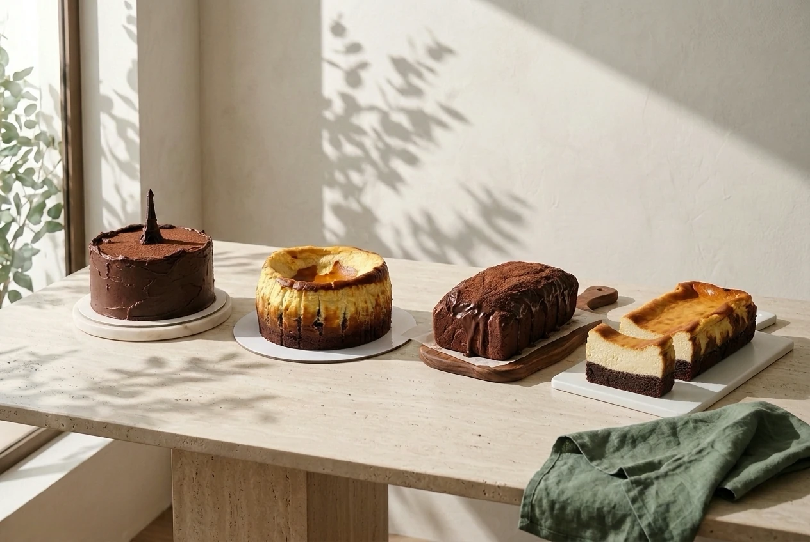
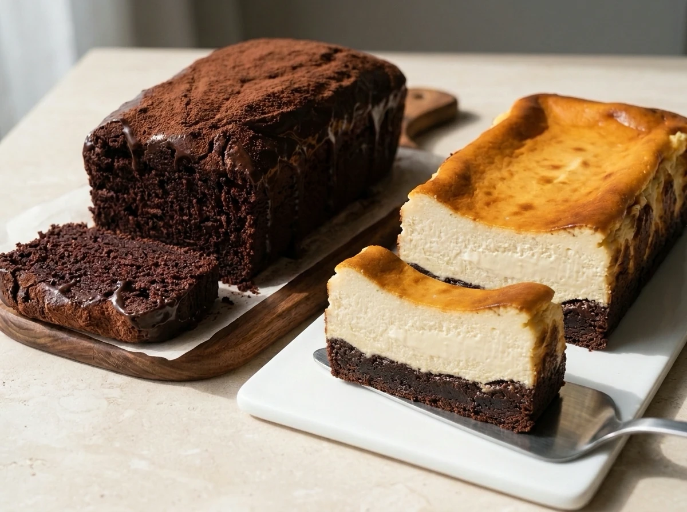
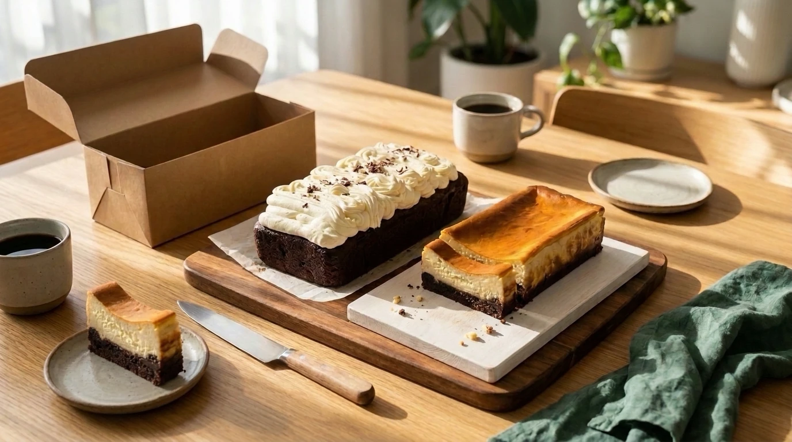

VERYGOOD JOURNAL · CAKE FORMAT & SLICING GUIDE
How the same patisserie recipes—from dense dark chocolate gâteau to two-layer Brownie Basque cheesecake—behave differently when baked as a round celebration centrepiece or a rectangular loaf.
When choosing a cake, most people start with flavour and headcount. Yet the shape of the cake tin—a round celebration tier versus a rectangular loaf—changes everything that happens once you bring the box home: how easily it fits on a busy fridge shelf, how cleanly it slices for two people versus a crowd, and how well the remaining cake keeps for tomorrow’s coffee.[15][17]
Because our dark chocolate and Basque cheesecake recipes are baked across both silhouettes—from round Pavé and Brownie Basque Whole Cakes to rectangular Signature Gâteau and Brownie Basque Loaves—you can choose the format around how you actually plan to serve and store it.
KEY TAKEAWAY · CENTREPIECE RITUAL VS. EVERYDAY SLICING
Choose a round whole cake (Pavé or Brownie Basque, 4-inch to 10-inch) when you want a birthday centrepiece shared in one sitting; choose a rectangular loaf (Signature Gâteau Loaf or Brownie Basque Loaf) for slim fridge storage, gifting and neat parallel slices over several days.

A round cake is built for a shared table ritual. Placed at the centre of a dinner or birthday gathering, a round four-layer Pavé Whole Cake or Brownie Basque Whole Cake invites candles, photos and radial wedge cuts (or grid cuts on larger 8-inch and 10-inch tiers).[15][17] Once a wedge is removed, two internal faces of the cake are exposed to the air, making round cakes ideal when most of the tier will be enjoyed in one sitting.
A rectangular loaf works on a completely different geometry. Instead of cutting into the centre, you slice straight across from one end in neat, parallel bars.[17] Every guest receives the exact same crust-to-crumb ratio, you can cut a slender 1.5 cm slice for a quiet afternoon cuppa or a generous 2.5 cm portion after dinner, and only one flat end remains exposed—making it simple to press baking paper against the cut face and slide the slim box back into the fridge.
GEOMETRY & STORAGE · RADIAL WEDGES VS. PARALLEL BARS
ROUND WHOLE CAKES (4" TO 10")
Pavé & Brownie Basque Whole Cakes
Designed for candles, speeches and group celebrations.[15] Sliced in radial wedges or event grids,[17] requiring a cleared square shelf in the fridge.
RECTANGULAR LOAF CAKES
Signature Gâteau & Brownie Basque Loaves
Slim rectangular footprint slides easily onto busy apartment fridge shelves. Straight parallel cuts[17] leave only one flat cut face to cover.
Our Signature Gâteau Loaf is baked in a rectangular tin from a rich dark chocolate gâteau batter made with butter, eggs, milk, cocoa and wheat flour.[12] You can enjoy it in its classic Basic form, finish it with Extra Chocolate poured over the top, or crown it with real-vanilla fresh cream.
Our Brownie Basque Loaf brings the exact same two-layer contrast as our round Brownie Basque Whole Cake—a fudgy dark chocolate brownie base[11] beneath a golden, caramelised Basque cheesecake layer[14]—into a sliceable rectangular bar, served Basic or topped with Vanilla Fresh Cream.

CAKE & BAKE FORMATS · CHOOSING BETWEEN ROUND TIERS AND LOAVES
CHOCOLATE · RECTANGULAR LOAF
Signature Gâteau Loaf
Dense rectangular gâteau au chocolat.[12] Choose Basic, Extra Chocolate poured glaze, or real-vanilla fresh cream.
Ideal for gifting, coffee tables & slim fridge shelves.
CHEESECAKE · LOAF OR ROUND
Brownie Basque (Loaf / Whole)
Fudgy dark chocolate brownie base[11] under baked Basque cheesecake.[14] Available as a rectangular loaf or round 4"–10" whole cake.
Choose loaf for parallel bars or round for candles.
CHOCOLATE · ROUND CENTREPIECE
Pavé Whole Cake (4" to 10")
Four dense chocolate gâteau layers sandwiched and coated with smooth 57.9% dark couverture pavé ganache.[20]
Our signature round celebration centrepiece.
Whether you choose a rectangular loaf for a weekend housewarming or pair a loaf alongside a round birthday cake, a few simple patisserie habits keep every slice sharp and fresh:
SLICING & FRIDGE CARE · THREE PRACTICAL HABITS
• Check fridge clearance before pickup: Rectangular loaf boxes occupy roughly half the shelf depth of a wide round cake box, while cheesecakes and Vanilla Fresh Cream finishes must stay refrigerated at 5 °C or below.[7][24]
• Use a warm, wiped blade for parallel cuts: Dip a smooth knife in hot water and wipe it dry between slices so dense chocolate gâteau, melted chocolate glaze and creamy Basque cheesecake cut cleanly without dragging.[17]
• Confirm allergens for hosts and guests: Our Pavé Whole Cake, Signature Gâteau Loaf and Brownie Basque Whole Cake and Loaf all contain milk, egg and wheat (gluten); always check full ingredient and allergen information before gifting or serving.[23]
GIFTING & HOME ENTERTAINING · FSANZ ALLERGEN CHECK
Changing from a round tin to a rectangular loaf does not change core allergens—all four cakes contain milk, egg and wheat (gluten), so share allergen details clearly when bringing a loaf as a host gift.[23]

VERYGOOD CHOCOLATE · MELROSE PARK PICKUP · SYDNEY
Explore our Cake & Bake Collection for pre-arranged pickup in Melrose Park, Sydney—including our Signature Gâteau Loaf, Brownie Basque Loaf, Brownie Basque Whole Cake and Pavé Whole Cake—or contact us for help choosing the right format.
[7] https://www.foodstandards.gov.au/business/food-safety/transporting-food-safely — FSANZ — Transporting food safely
[11] https://www.kingarthurbaking.com/blog/2025/05/21/types-of-brownies — King Arthur Baking — Types of brownies: fudgy, chewy, and cakey explained
[12] https://www.kingarthurbaking.com/learn/guides/cake — King Arthur Baking — Cake Guide
[14] https://www.kingarthurbaking.com/recipes/basque-cheesecake-tarta-de-queso-recipe — King Arthur Baking — Basque Cheesecake (Tarta de Queso)
[15] https://www.cakefromtheheart.com.au/cake-sizing.html — Cake from the Heart — Cake Sizing & Configurations
[17] https://www.lamanna.com.au/cake-cutting-guide — LaManna — Cake Cutting Guide
[20] https://www.valrhona.com/en/l-ecole-valrhona/discover-l-ecole-valrhona/chocolate-terminology/chocolate-emulsion — Valrhona — Chocolate emulsion
[23] https://www.foodstandards.gov.au/consumer/labelling/allergen-labelling — FSANZ — Allergen labelling for consumers
[24] https://www.foodstandards.gov.au/business/food-safety/2-hour-4-hour-rule — FSANZ — 2-hour / 4-hour rule